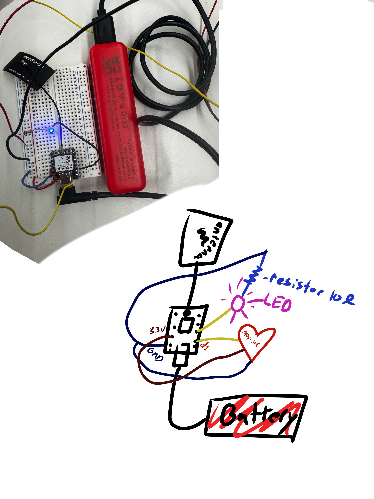
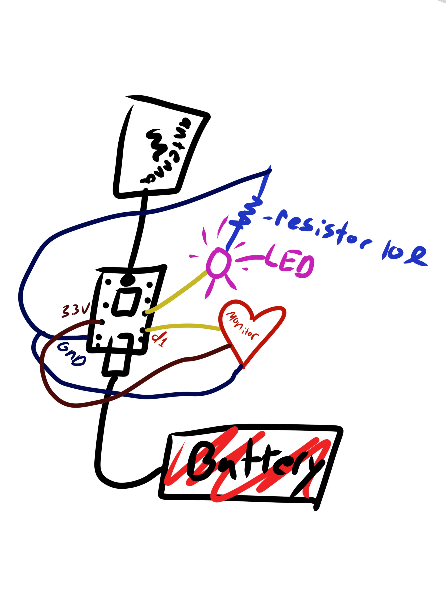

<div class="textcontainer">
<p class="margin"> </p>
<h3>Week 9: Radio, WiFi, Bluetooth (IoT)</h3>
<p class="margin"> </p>
<div class="flexrow">
</div>
<p class="margin"> </p>
<h4>Assignment: [Program something with IOT]</h4>
<br></br>
This week was super exciting! We learned that we could connect to the XIAO ESP32 C3 microcontrollers via bluetooth, wifi, and more...
<br></br>
Me and Avery worked together, building off her amazing Bagel-Heart-Monitor-Excercise-Game.
<br></br>
<a href="https://averypaperclip.github.io/">Check out Avery's amazing projects here!</a>
<br></br>
Our setup is made of an led, a heart rate sensor, a breadboard, wires, and a python server connected to a website.
<br></br>
Our goal was to have two functions from this product;
<br></br>
1. Have the XIAO completely unplugged from the computer, transmitting the heart rate through bluetooth to the website, where it will show up in real time.
<br></br>
2. Have the LED flash with your heart rate using the information from the website.
<br></br>
First I assembled the circuit, which I've drawn a diagram of below.
<br></br>
<p></p>
<p></p>
<br></br>
Then Avery altered her code from her previous project to create these new functions.
<br></br>
Here is the code she used! (We ran into a couple roadblocks throughout, including her computer not accepting the XIAO bluetooth connection entirely, but luckily it worked on mine!)
<br></br>
<br></br>
<pre>
<code>
&lt;!DOCTYPE html&gt;
&lt;html&gt;
&lt;head&gt;
&lt;title&gt;Heart Rate Game&lt;/title&gt;
&lt;script src=&quot;https://cdn.jsdelivr.net/npm/p5@1.9.0/lib/p5.min.js&quot;&gt;&lt;/script&gt;
&lt;/head&gt;
&lt;body style=&quot;margin:0; overflow:hidden; background:#0b0e1a; color:white;&quot;&gt;
&lt;button onclick=&quot;connectBLE()&quot; style=&quot;position:fixed; top:10px; left:10px; font-size:16px; padding:8px 14px; border-radius:999px; border:none; background:#ff4f7b; color:white; box-shadow:0 0 10px rgba(255,79,123,0.6); cursor:pointer; z-index:10;&quot;&gt;
Connect
&lt;/button&gt;
&lt;script&gt;
let bpm = 70;
let characteristic;
// GAME / QUIZ STATE
let gameState = &quot;question&quot;; // question, exercise, result, done
let selectedResponse = null;
let countdown = 10;
let exercise = &quot;&quot;;
let resultMessage = &quot;&quot;;
let isCorrect = false;
// QUESTIONS
let questions = [
{
text: &quot;What organ pumps blood through your body?&quot;,
options: [&quot;Heart&quot;, &quot;Lungs&quot;],
correct: 1
},
{
text: &quot;What shape has three sides?&quot;,
options: [&quot;Triangle&quot;, &quot;Circle&quot;],
correct: 1
},
{
text: &quot;What color is the sky on a clear day?&quot;,
options: [&quot;Blue&quot;, &quot;Red&quot;],
correct: 1
},
{
text: &quot;What number comes after 4?&quot;,
options: [&quot;5&quot;, &quot;3&quot;],
correct: 1
},
{
text: &quot;What do you need to breathe?&quot;,
options: [&quot;Oxygen&quot;, &quot;Milk&quot;],
correct: 1
}
];
let currentQuestionIndex = 0;
let score = 0;
// EXERCISES
let exercises = [
&quot;5 Jumping Jacks &quot;,
&quot;10 Fast Steps in Place&quot;,
&quot;5 High Knees Each Leg&quot;,
&quot;10 Arm Circles Forward&quot;,
&quot;5 Squats&quot;
];
let exerciseIndex = 0;
// BLE CONNECTION
async function connectBLE() {
const device = await navigator.bluetooth.requestDevice({
filters: [{ name: &quot;ESP32&quot; }],
optionalServices: [&quot;12345678-1234-1234-1234-123456789abc&quot;]
});
const server = await device.gatt.connect();
const service = await server.getPrimaryService(&quot;12345678-1234-1234-1234-123456789abc&quot;);
characteristic = await service.getCharacteristic(&quot;abcdefab-1234-1234-1234-abcdefabcdef&quot;);
await characteristic.startNotifications();
characteristic.addEventListener('characteristicvaluechanged', (event) =&gt; {
console.log(&quot;received message&quot;)
let value = new TextDecoder().decode(event.target.value);
let val = parseInt(value);
console.log(val)
if (!isNaN(val)) bpm = val;
});
console.log(&quot;Connected ❤️&quot;);
}
// P5 SETUP
function setup() {
createCanvas(window.innerWidth, window.innerHeight);
textAlign(CENTER, CENTER);
textFont('sans-serif');
textSize(24);
// shuffle exercises once at start
exercises = shuffle(exercises, true);
}
// DRAW LOOP
function draw() {
drawBackground();
drawHeartFrame();
drawCentralHeart();
drawHUD();
// State‑specific text/UI so nothing lingers between states
if (gameState === &quot;question&quot;) {
drawQuestionUI();
} else if (gameState === &quot;exercise&quot;) {
drawExerciseUI();
} else if (gameState === &quot;result&quot;) {
drawResultUI();
} else if (gameState === &quot;done&quot;) {
drawFinalUI();
}
}
// -------- UI SECTIONS --------
function drawQuestionUI() {
fill(255);
textSize(28);
text(&quot;Question &quot; + (currentQuestionIndex + 1) + &quot; of &quot; + questions.length, width/2, height*0.18);
textSize(24);
text(questions[currentQuestionIndex].text, width/2, height*0.28);
let q = questions[currentQuestionIndex];
drawButton(q.options[0], width/2 - 180, height*0.45, () =&gt; selectResponse(1));
drawButton(q.options[1], width/2 + 180, height*0.45, () =&gt; selectResponse(2));
}
function drawExerciseUI() {
fill(255);
textSize(28);
text(&quot;HEART CHALLENGE&quot;, width/2, height*0.18);
textSize(22);
if (selectedResponse === 1) {
text(exercise, width/2, height*0.28);
} else {
text(&quot;Stay completely still 🧘&quot;, width/2, height*0.28);
}
textSize(20);
text(&quot;Time left: &quot; + countdown + &quot;s&quot;, width/2, height*0.35);
// visual timer ring
let pct = countdown / 10;
noFill();
stroke(255, 80);
strokeWeight(14);
ellipse(width/2, height*0.55, 160, 160);
stroke(255, 90, 130);
arc(width/2, height*0.55, 160, 160, -HALF_PI, -HALF_PI + TWO_PI * pct);
// countdown logic
if (frameCount % 60 === 0 &amp;&amp; countdown &gt; 0) {
countdown--;
}
if (countdown === 0) {
evaluateResult();
}
}
function drawResultUI() {
fill(255);
textSize(30);
text(resultMessage, width/2, height*0.32);
textSize(22);
text(&quot;BPM: &quot; + bpm, width/2, height*0.38);
text(&quot;Score: &quot; + score + &quot; / &quot; + questions.length, width/2, height*0.44);
let btnLabel = (currentQuestionIndex &lt; questions.length - 1) ? &quot;Next Question&quot; : &quot;See Final Score&quot;;
drawButton(btnLabel, width/2, height*0.58, nextStep);
}
function drawFinalUI() {
fill(255);
textSize(34);
text(&quot;You reached the end of the heart quiz!&quot;, width/2, height*0.3);
textSize(26);
text(&quot;Final Score: &quot; + score + &quot; / &quot; + questions.length, width/2, height*0.36);
textSize(18);
text(&quot;Tip: Watch how your heart responds as you move and rest.&quot;, width/2, height*0.42);
drawButton(&quot;Play Again&quot;, width/2, height*0.56, resetGame);
}
// -------- BUTTON --------
function drawButton(label, x, y, action) {
let w = 220;
let h = 60;
let isHover = mouseX &gt; x - w/2 &amp;&amp; mouseX &lt; x + w/2 &amp;&amp;
mouseY &gt; y - h/2 &amp;&amp; mouseY &lt; y + h/2;
noStroke();
fill(isHover ? color(255, 79, 123) : color(255, 255, 255, 220));
rectMode(CENTER);
rect(x, y, w, h, 16);
fill(isHover ? 255 : 40);
textSize(20);
text(label, x, y+2);
if (mouseIsPressed &amp;&amp; isHover) {
action();
}
}
// -------- GAME LOGIC --------
function selectResponse(choice) {
if (gameState !== &quot;question&quot;) return;
selectedResponse = choice;
// pick exercise in sequence, reshuffle when we hit the end
if (exerciseIndex &gt;= exercises.length) {
exercises = shuffle(exercises, true);
exerciseIndex = 0;
}
exercise = exercises[exerciseIndex];
exerciseIndex++;
countdown = 10;
gameState = &quot;exercise&quot;;
}
function evaluateResult() {
let q = questions[currentQuestionIndex];
isCorrect = (selectedResponse === q.correct);
if (selectedResponse === 1) {
if (bpm &gt; 100) {
resultMessage = isCorrect
? &quot;Correct AND your heart worked hard! ❤️🔥&quot;
: &quot;Your heart worked, but the answer was wrong.&quot;;
} else {
resultMessage = isCorrect
? &quot;Correct, but try to move a bit more next time.&quot;
: &quot;Wrong answer and low heart push. Try again next round!&quot;;
}
} else {
if (bpm &lt; 100) {
resultMessage = isCorrect
? &quot;Correct AND you stayed calm. Zen heart! 🧘&zwj;♀️&quot;
: &quot;You stayed calm, but the answer was wrong.&quot;;
} else {
resultMessage = isCorrect
? &quot;Correct answer, but your heart is still excited!&quot;
: &quot;Wrong answer and your heart sped up. Interesting!&quot;;
}
}
if (isCorrect) score++;
gameState = &quot;result&quot;;
}
function nextStep() {
if (gameState !== &quot;result&quot;) return;
if (currentQuestionIndex &lt; questions.length - 1) {
currentQuestionIndex++;
selectedResponse = null;
countdown = 10;
gameState = &quot;question&quot;;
} else {
gameState = &quot;done&quot;;
}
}
function resetGame() {
gameState = &quot;question&quot;;
selectedResponse = null;
countdown = 10;
exercise = &quot;&quot;;
resultMessage = &quot;&quot;;
score = 0;
currentQuestionIndex = 0;
exerciseIndex = 0;
exercises = shuffle(exercises, true);
}
// -------- VISUALS --------
// cool geometric, heart‑motif background
function drawBackground() {
// gradient background
for (let y = 0; y &lt; height; y += 4) {
let t = y / height;
let c = lerpColor(color(6, 9, 30), color(36, 5, 40), t);
stroke(c);
line(0, y, width, y);
}
noFill();
stroke(255, 40);
strokeWeight(1);
// geometric grid
let step = 80;
for (let x = 0; x &lt; width; x += step) {
line(x, 0, x, height);
}
for (let y = 0; y &lt; height; y += step) {
line(0, y, width, y);
}
// floating hearts
noStroke();
for (let i = 0; i &lt; 12; i++) {
let hx = (i * 90 + frameCount * 0.5) % (width + 180) - 90;
let hy = (sin((i * 30 + frameCount) * 0.02) * 80) + height * 0.2;
let s = 18 + (i % 3) * 6;
drawHeartShape(hx, hy, s, color(255, 79, 123, 120));
}
// heart rate line along bottom
stroke(255, 80);
strokeWeight(2);
noFill();
beginShape();
let baseline = height - 80;
for (let x = 0; x &lt;= width; x += 10) {
let t = (x + frameCount * 2) * 0.02;
let y = baseline - (abs(sin(t * 3)) * 20);
vertex(x, y);
}
endShape();
}
// heart frame behind central heart
function drawHeartFrame() {
let cx = width/2;
let cy = height/2;
let s = 260;
push();
translate(cx, cy);
noFill();
stroke(255, 80);
strokeWeight(3);
polygon(0, 0, s*0.55, 6);
noStroke();
drawHeartShape(0, 0, s*0.6, color(255, 79, 123, 60));
pop();
}
// central heart avatar
function drawCentralHeart() {
push();
translate(width/2, height/2 - 10);
drawHeartShape(0, 0, 140, color(255, 79, 123));
// inner glow
drawHeartShape(0, 0, 110, color(255, 180, 200, 180));
pop();
}
// Proper heart shape using two circles + triangle
function drawHeartShape(x, y, size, col) {
push();
translate(x, y);
noStroke();
fill(col);
let r = size / 2;
// top two circles
ellipse(-r*0.5, -r*0.3, r, r);
ellipse(r*0.5, -r*0.3, r, r);
// bottom triangle
beginShape();
vertex(-r, -r*0.1);
vertex(0, r);
vertex(r, -r*0.1);
endShape(CLOSE);
pop();
}
// regular polygon helper
function polygon(x, y, radius, npoints) {
let angle = TWO_PI / npoints;
beginShape();
for (let a = 0; a &lt; TWO_PI; a += angle) {
let sx = x + cos(a) * radius;
let sy = y + sin(a) * radius;
vertex(sx, sy);
}
endShape(CLOSE);
}
// HUD: BPM and label
function drawHUD() {
// BPM pill
let pillX = width - 140;
let pillY = 40;
let pillW = 180;
let pillH = 36;
rectMode(CENTER);
noStroke();
fill(0, 0, 0, 140);
rect(pillX, pillY, pillW, pillH, 999);
drawHeartShape(pillX - pillW/2 + 26, pillY, 18, color(255, 79, 123));
fill(255);
textSize(16);
textAlign(LEFT, CENTER);
text(&quot;BPM: &quot; + bpm, pillX - pillW/2 + 44, pillY);
// title (always visible, non‑overlapping)
textAlign(CENTER, CENTER);
textSize(22);
fill(255, 220);
text(&quot;Heart Rate Game&quot;, width/2, 40);
}
function windowResized() {
resizeCanvas(window.innerWidth, window.innerHeight);
}
&lt;/script&gt;
&lt;/body&gt;
&lt;/html&gt;
</code>
</pre>
<br></br>
It's very complex! (Shout out to Avery's amazing CS50 coding knowledge). In order to upload this here I also had to learn how to "escape" the html and be able to copy it into this code.
<br></br>
Here is when we finally got it working! The heart rate shows up beautifully on the LED, as demonstrated at the beginning of the attached video.
<br></br>
You can see the heart rate updating on the website, and the LED pulsing along with it!
<br></br>
<video width="640" height="480" controls>
<source src="Videoshop_2026-04-09_02-02-45-730.mov" type="video/mp4">
</video>
</div>